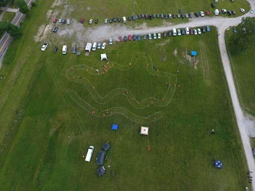
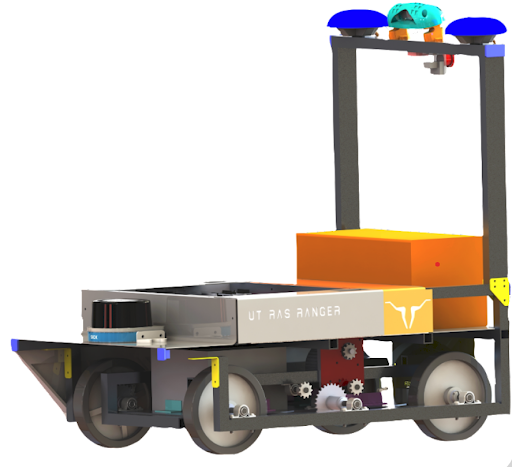

{% capture igvc_markdown %}

# IGVC Committee

### Committee Head: Kevin Nguyen (Discord: Owl#4211) and Noah Aguillon

<div style="width:300px; height:400px;">
    
</div>


### **Meetings**
* **Fridays  5:00 PM**, R&A Room at Texas Inventionworks (EER)
    * Feel free to message/email me if you get lost, it’s a hard room to find!

### **IGVC Competition**
IGVC is a competitive committee whose objective is to build an autonomous vehicle! It must be able to navigate a football field-sized obstacle course under a time limit. The fastest robot to successfully traverse the course wins a grand prize of $3000.



*IGVC Competition Field*

### **Our Robot!**


### **Subteams**

##### **Mechanical**
* Designing, machining, and building the robot to be ready for competition
* No experience necessary

##### **Electrical**
* Circuit design 
* Control systems 
* Able to interpret circuit schematics/diagrams 


##### **Software**
* Autonomous navigation algorithms
* LiDAR sensor 
* GPS
* Python/C++ required
* ROS Library(not required to know, but great if you have experience)

### **Get Involved!**
if you’re interested in joining, reach out to me at pjmathews731@utexas.edu 

{% endcapture %}{{ igvc_markdown | markdownify }}
